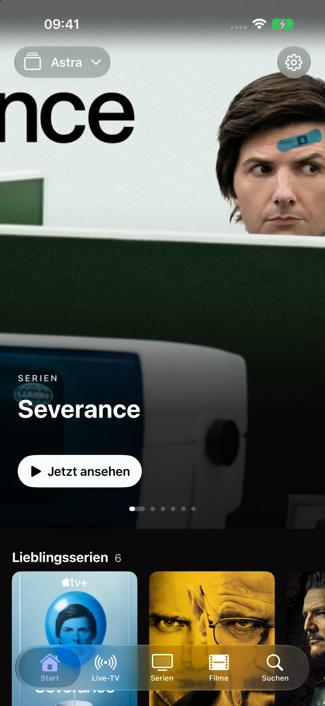
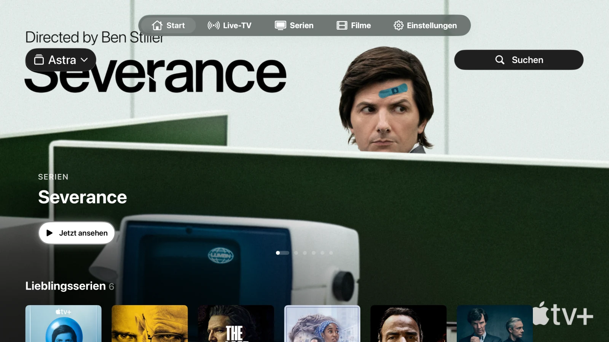
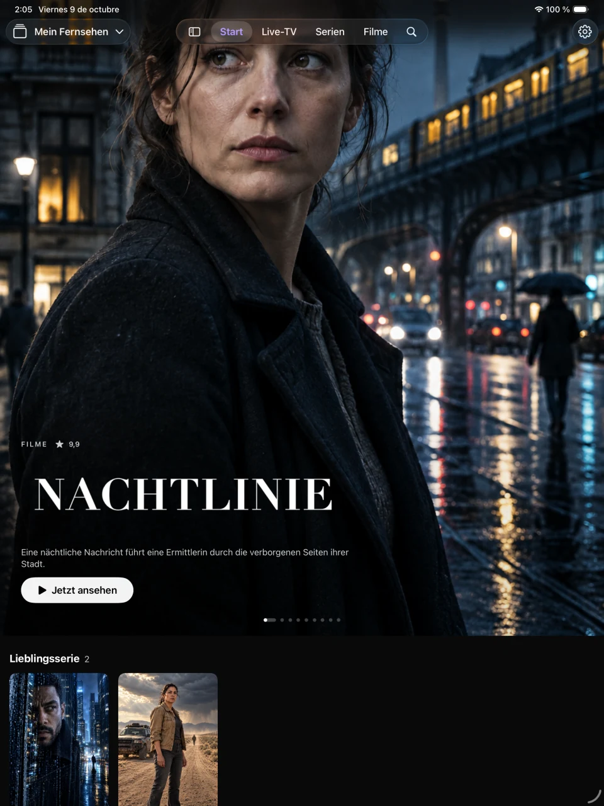

Ihre Listen, vernetzt
Fügen Sie eine M3U/M3U8-URL oder eine Xtream-Verbindung hinzu. Wechseln Sie zwischen Listen und halten Sie Kataloge, Favoriten und Wiedergabeverlauf getrennt. Auf iPhone und iPad können Sie auch M3U-Dateien importieren.
Für Ihre Bildschirme gemacht
Ihre eigenen Playlists in einem kostenlosen Player ohne Werbung von Astra. Verbinden Sie M3U oder Xtream und genießen Sie Ihre Sender, Filme und Serien auf iPhone, iPad und Apple TV.
Nutzen Sie Ihre eigene Playlist. Astra ist noch nicht im App Store verfügbar. Sie entscheiden, ob Sie die E-Mail zur Benachrichtigung senden.

Alles an seinem Platz
Eine Bibliothek, die Platz für Ihre Inhalte schafft. Ihre Listen, Favoriten und Wiedergabefortschritte – mit Bedienelementen, die sich auf jedem Bildschirm natürlich anfühlen.
Fügen Sie eine M3U/M3U8-URL oder eine Xtream-Verbindung hinzu. Wechseln Sie zwischen Listen und halten Sie Kataloge, Favoriten und Wiedergabeverlauf getrennt. Auf iPhone und iPad können Sie auch M3U-Dateien importieren.
Durchstöbern Sie Sender, sehen Sie, was gerade läuft, und nutzen Sie den XMLTV-Programmführer. Haben Sie Ihre Lieblingssender stets griffbereit.
Entdecken Sie Filme und Serien, wählen Sie eine Episode aus und schauen Sie genau an der Stelle weiter, an der Sie unterbrochen haben. Audio und Untertitel sind verfügbar, sofern Ihre Quelle diese bereitstellt.
Eine App. Ihre Bildschirme.
Tabs auf dem iPhone, eine Seitenleiste auf dem iPad und Bedienelemente, die speziell für die Apple TV-Fernbedienung entwickelt wurden. Kompatible Listen, Favoriten und Wiedergabefortschritte können über Ihren privaten iCloud-Account synchronisiert werden.


AirPlay und Bild-in-Bild nutzen den systemeigenen Player, sofern System und Format dies unterstützen. Lokal importierte Dateien werden nicht als abspielbare Dateien auf Apple TV übertragen.
Die Veröffentlichung für iPhone, iPad und Apple TV wird derzeit vorbereitet. Astra ist noch nicht im App Store erhältlich. Sie können sich per E-Mail benachrichtigen lassen, sobald die App verfügbar ist.
Nein. Astra verkauft oder liefert weder Sender, Filme, Serien oder Wiedergabelisten noch TV-Abonnements. Bitte nutzen Sie eine Quelle, für deren Verwendung Sie die entsprechende Berechtigung besitzen.
Ihre Mediathek verbleibt auf Ihrem Gerät. Kompatible Daten können über Ihre private iCloud-Datenbank synchronisiert werden. Nutzungsstatistiken und Absturzberichte sind optional, standardmäßig deaktiviert und können separat in den Einstellungen verwaltet werden.
Diese Website verwendet keine Analysetools, Werbung, Formulare oder eigenen Cookies. Sie wird von GitHub Pages gehostet; dort können gemäß der Datenschutzerklärung technische Informationen zum Besuch erfasst werden.
Entwickelt von Juan Cazalla Estrella.